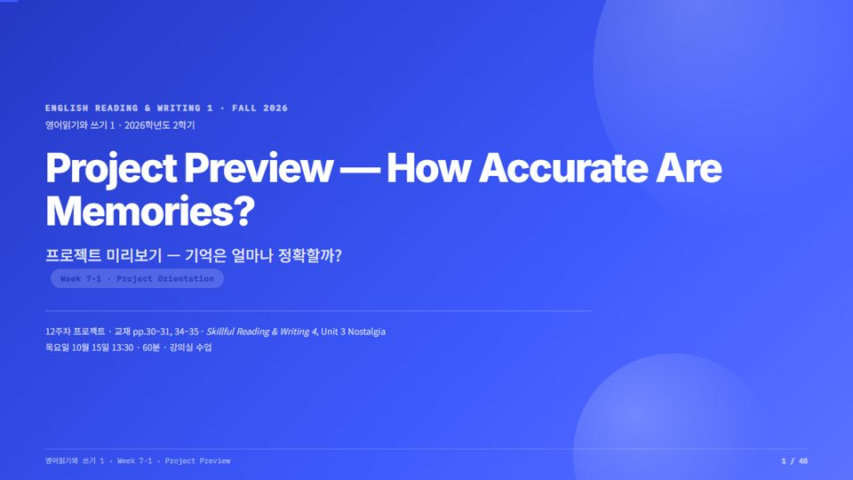

교양영어 강의 덱과 과제 채점, 학교 공모 신청서를 같은 틀 하나로 자동화했습니다.
발표 대본: week-script.md
Apps Script · Gemini · 구글 시트 · 폼으로 두 업무를 옮겨 보았습니다. 배운 것: 규칙을 먼저 글로 쓰면 도구가 바뀌어도 옮길 수 있다.
각자 1차 → GPT가 Claude 검토 → Claude 최종 → 교수 확정. 가상 학생 5명: 인용 대조 모두 일치 · 수정본 복원 4/4 · GPT 검토가 Claude의 인용 실수를 잡음.
이미 쓴 차시(ELS1 6-1)를 다시 만들어 시험: 56장 · 영상 5 · GPT 이의 10건 중 7건이 Claude와 코드가 놓친 것. 결정: 실제 제작은 Codex 검토 한 번, Claude가 Codex를 직접 부른다.
GNC 온라인 영어강의 개발 신청서: Claude 초안(한글 서식 12쪽) → GPT 검토(지적 16) → Claude 최종(받아들임 15 · 절충 1) → 교수 확정. 기초학력 Level-up(영어) 신청서: 서식 칸 채우기 + 심사 기준 5개 대조표.
내일(10/15) 수업에 쓰는 덱. 계획 → 조립 → GPT 검토(Claude가 codex exec로 부름, 5분 45초) → 최종. 48장 · 영상 5 · 연습 10 · 넘침 0 · PDF 48쪽 · GPT 이의 6건 → 받아들임 5 · 절충 1. 조립부터 최종 검사 통과까지 20분 45초.
